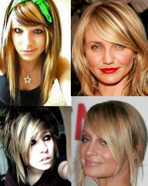
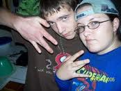
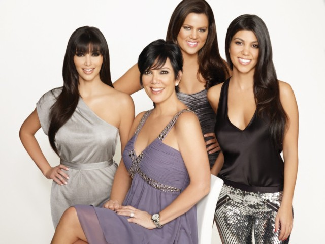
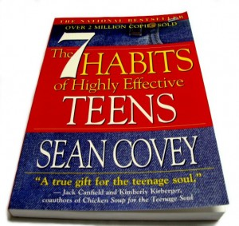

Now-A-Days :D
Pop culture items
AKA: things that annoy me in 2011...

Facebook started off as a good way keep track of your friends in one place. Now it's become a way to hide behind a computer screens. We see a few posts from our friends, comment or like them, and feel like we're actually being good friends. It's now easier to Facebook someone than call them. It should be called the anti-social network.

Bangs
Hair is all about Bangs, Bangs, Bangs... Which is annoying since I can't grow them because of an oldly placed cowlick near the middle of my forehead. They're cute, sure, but have a little variety. I wonder if they're already out in 2021.
Justin Bieber
Baby, baby, baby, ohhhhh. (put's fingers in ears) Stop. For some odd reason this young, seemingly prepubescent, boy has stolen the daydreams of tweens, the annoyance of many, and way too much coverage in our news and magasines. Fine, be a musician, but if I see one more JB backpack or t-shirt I'm going to puke.

Wangsters
White kids who seem to think they're cool because they things like da, wat up, fo sho, and spout of profantities. They're cool because dey so hood. Gahh it annoys me. This ties in with facebook, because all of their posts are trying to prove how gangsta they are. Sagging pants... seriously? Pull them up. Wear a belt. Don't buy pants 3 sizes too big. I'd rather not see your boxers on a regular basis. 104.5 WSNX is one of the main stations in Grand Rapids. Mainly Rap, Hip Hop and R and B. That's fine, but annoying 24-7.

The Kardashians
The Kardashians... famous for being famous. I'm not sure what they even do. All I know is that they have a show, lots of money, and a terrible nasally valley girl voice. And that they need to stop taking over my tv.
Significants

Book: 7 Habits of Highly Effective Teens
So sure this book is a little bit older than 2011, but it's still a very good book. It was a very helpful source for me during high school.

Movie: Donnie Darko
This is one of my favorite movies. It really pushed me from watching chick flicks and popular movies to movies that are "out there" and interesting.